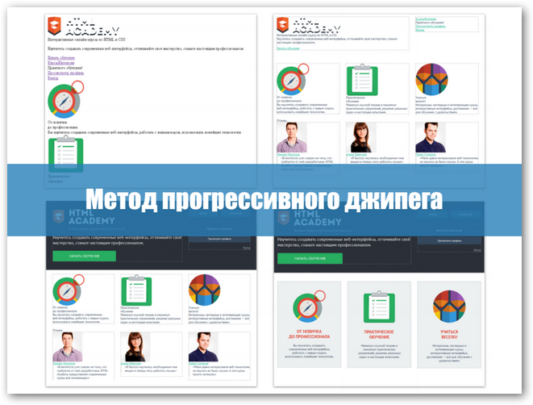

Курс состоит из 10 разделов, 9 вебинаров, 7 интерактивных туториалов, 3 сайтов, включающим 3-4 html-макета, и целое море ссылок на инструменты, статьи и гайды по верстке. Не то чтобы это все нужно, когда начинаешь изучать верстку, но... Да, все это нужно.
Каждый раздел включает запись вебинара (после того, как он будет проведен), блок с полезными ссылками на инструменты и статьи, а также блок заданий раздела
Раздел начинается с описания интенсива:
Не самый интересный блок, но он необходим для формирования полной картины происходящего у верстальщиков.
Изучение базовой HTML-разметки:
На примере реальный страницы будет подробно и с поясненими создан HTML-скелет страницы.
Практическое задание, кроме прохождения курсов, будет содержать 4 страницы, для которых необходимо сделать HTML-разметку
В помощь предоставлен интерактивный пошаговый туториал по разметке и статьи
Модульные сетки - одна из самых сложных и важных тем при верстке.
Вы узнаете как правильно делать основной каркас страницы, чтобы блоки шли в нужном порядке и последовательности (даже в старых браузерах).
А также различные приемы построения сеток.
Вас ждет серия видео-туториалов по основам фотошопа для верстальщика: от основных инструментов и правил нарезки макетов до рекомендаций по структуре и быстрого экспорта.
На данном этапе вы уже получите достаточно знаний, чтобы начать оформление макетов.
Для начала будет рассмотрено позиционирование элементов, дана основная информация и показано использование псевдоэлементов и спрайтов.
Затем как и в предыдущих вебинарох, подробно и пошагово, будет проведена верстка сакета.
А также разобраны учебные макеты.
В разделе будет рассмотрена верстка специфических элемнтов, таких, как каталог товаров, стилизация фильтров страницы каталога, верстка слайдера и форм.
Это, пожалуй, самый интересный раздел, после того, как вы выполните верстку по туториалу данного раздела, ваши страницы будут иметь законченный вид
Понятие пргассивного улучшения и Graceful degradation, а также зачем это нужно.
HTML5&CSS3 - что нового и что уже можно смело использовать при верстке. Поддержка браузеров.
А также веб-шрифты и их подключение.
Используем JavaScript для улучшения UX:
Доступна методичка и пошаговая видео-инструкция:
Материалы предоставлены партнерами из Epic Skills.
Когда вы поймете, что лучшего способа научится верстать вы не найдете - возьмите промо-код htmlacademy.ru - сэкономите при оплате интенсива.
А затем держитесь: будет интересно и сложно, очень сложно, но при должном упорстве вы будете довольны результатом.